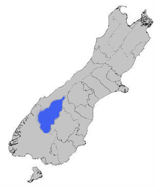

The Queenstown Lakes District Is The Second Fastest Growing Council In New Zealand According to 2013 census information released today (Tuesday) by Statistics NZ, the districts population is now 28,224 a 23 per cent lift from the last census in 2007. Only the Selwyn district, near Christchurch, grew faster. The Otago region grew almost five per cent, but three-fifths of that growth came from Queenstown-Lakes. Re-elected Queenstown mayor Vanessa van Uden says the census figure reinforce what the council knows, that the area remains a highly desirable place to live and visit. Councils planning had to factor in the impacts of high growth, she says. "Some of these impacts are highly positive such as greater economic growth, an increased rating base which will help minimise ratepayer costs and increased property values for existing homeowners. But against that are things such as increasing difficulty for families wanting to buy their first home and greater demands on our core infrastructure." Van Uden says the census figures will help her council update its Long Term Plan next year.
Below is a map of the South Island of New Zealand which shows each of the Regional Councils. Highlighted in blue is the Queenstown Lakes District, where the Queenstown Lakes District Council looks after. To see the specific towns and suburbs within the Queenstown Lake District, click on the blue highlighted area. 
Below is a chart that displays the relative populations of each of the towns and suburbs in within the Queenstown Lakes District.